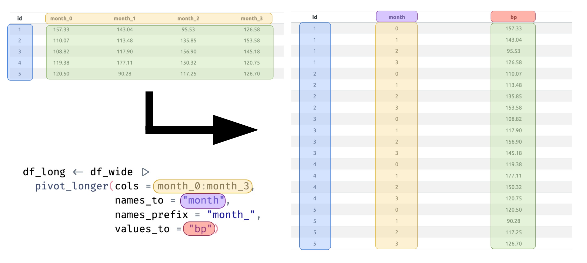

Reshaping Data - Think Before you Pivot
In your day-to-day data analysis work you will probably find yourself at some point needing to reshape data, and this is usually to suit an analytical need. Reshaping is changing the rectangular structure of the columns and rows in your dataset without altering the content. Data comes in two basic shapes: wide and long.
1 Wide Data
I would argue that most data is collected and recorded in this format. A defining feature of the wide data format is that all measurements collected for a single ‘unit of observation’ occur on the same row.
Think of the unit of observation as hierarchical in nature. Typically, the unit of observation is a patient or subject, but it may also be at a higher level - e.g. measurements on eyes of patients; or at a lower level - e.g. measurements on hospitals.
A good example of this is repeated measures for some variable that occur over time. The first column might be an subject ID variable and then additional columns, the value of the measurement over each time point. Let’s simulate some data to show this idea.
In this simulated dataframe I have created values of some variable - for the sake of the example let’s say it’s systolic blood pressure (mean 130 mmHg, SD 20 mmHg) for 5 subjects, measured at 4 time points - baseline and then every month for 3 months. The data look like:
| id | month_0 | month_1 | month_2 | month_3 |
|---|---|---|---|---|
| 1 | 136.79 | 170.78 | 130.11 | 136.40 |
| 2 | 99.08 | 110.87 | 118.15 | 141.49 |
| 3 | 126.75 | 98.83 | 136.86 | 129.01 |
| 4 | 156.07 | 121.08 | 148.44 | 138.46 |
| 5 | 101.83 | 114.27 | 147.84 | 149.54 |
This in an intuitive format for collecting and recording data like this, but it doesn’t easily lend itself to the various analyses you might want to conduct. Sure, if you were interested in testing for differences in BP at different time points, you could do that with t-tests across relevant columns, but it may mean multiple tests. Indeed, there are more statistically efficient approaches to do this, but first you need to reshape your data into long format.
2 Long Data
Data is in long format when the measurements collected for a single unit of observation occur on multiple rows. In effect, they are transformed from going across columns within a single row to down rows within a single column (I will illustrate this below). This is the data format required for many modelling approaches in most statistical software and is the default format for longitudinal or repeated measures data. This is what the same data in long format look like:
| id | month | bp |
|---|---|---|
| 1 | 0 | 136.79 |
| 1 | 1 | 170.78 |
| 1 | 2 | 130.11 |
| 1 | 3 | 136.40 |
| 2 | 0 | 99.08 |
| 2 | 1 | 110.87 |
| 2 | 2 | 118.15 |
| 2 | 3 | 141.49 |
| 3 | 0 | 126.75 |
| 3 | 1 | 98.83 |
| 3 | 2 | 136.86 |
| 3 | 3 | 129.01 |
| 4 | 0 | 156.07 |
| 4 | 1 | 121.08 |
| 4 | 2 | 148.44 |
| 4 | 3 | 138.46 |
| 5 | 0 | 101.83 |
| 5 | 1 | 114.27 |
| 5 | 2 | 147.84 |
| 5 | 3 | 149.54 |
So, what have we done here?
Enter pivot_longer() from the tidyr package.
The figure below shows how pivot_longer() has transformed each component of the data from its original format to the new long format. In other words we have pivoted the data from wide to long. You will see that where the data for a specific ID originally spanned across multiple columns but within one row, in long format the data for each ID now spans across multiple rows but within one column.

The basic syntax of pivot_longer() is as follows:
pivot_longer(data, cols, names_to, values_to)
where:
data: The data frame or tibble to be reshaped.cols: The columns to be transformed from wide to long.names_to: The name of the new (long) column that will hold the (currently wide) variable names.values_to: The name of the new (long) column that will hold the corresponding (currently wide) values.
That’s basically it. While knowledge of how to write the code is clearly important, It may still seem confusing as to how to actually operationalise it. So let’s go through a few of some of the more common use-case scenarios that might require you to reshape data from wide to long format. As these examples will illustrate, not all wide data is equal and there are certainly some nuances to the coding depending on how the data are recorded and how you want the data to look after pivoting.
2.1 Case 1: One Name Column, One Value Column
This is the most common and most straight-forward application of reshaping to long that you might be required to perform. In this case we have multiple value columns in wide format that we want to reshape to one name column and one value column. The good news is that we have already done this in the example above. The code is also shown but just to revisit that briefly for clarity:
So we take the df_wide dataframe and ‘pipe’ it to the pivot_longer() function where we specify that we want to take the columns from (and including) month_0 to month_3, assigning those column names as category labels in the new month name variable, while also placing each corresponding BP measurement into the new bp value variable. The names_prefix argument is optional but was used here to strip out the somewhat redundant month_ text from each column name prior to labelling. You could certainly leave this in if you wanted and the result would then be:
| id | month | bp |
|---|---|---|
| 1 | month_0 | 136.79 |
| 1 | month_1 | 170.78 |
| 1 | month_2 | 130.11 |
| 1 | month_3 | 136.40 |
| 2 | month_0 | 99.08 |
| 2 | month_1 | 110.87 |
| 2 | month_2 | 118.15 |
| 2 | month_3 | 141.49 |
But I’m sure you’d agree that the results looks cleaner without all that unnecessary repetition.
2.2 Case 2: Multiple Name Columns, One Value Column
Let’s now extend this idea a little. Imagine that in addition to BP measurements, subjects also had their weight measured at the same time points (simulated with a mean of 70 kg and SD 15 kg). Now we have data that could potentially look like:
Code
id <- seq(1:5)
for(i in 0:3){
var_name_bp <- paste0("month_",i,"_bp")
assign(var_name_bp, rnorm(5, 130, 20))
var_name_wt <- paste0("month_",i,"_wt")
assign(var_name_wt, rnorm(5, 70, 15))
}
df_wide <- data.frame(cbind(id, month_0_bp, month_0_wt, month_1_bp, month_1_wt, month_2_bp, month_2_wt, month_3_bp, month_3_wt))
df_wide |>
kable(align = "c", digits = 2)| id | month_0_bp | month_0_wt | month_1_bp | month_1_wt | month_2_bp | month_2_wt | month_3_bp | month_3_wt |
|---|---|---|---|---|---|---|---|---|
| 1 | 139.56 | 64.44 | 142.76 | 88.21 | 94.20 | 31.81 | 123.68 | 110.41 |
| 2 | 159.89 | 58.74 | 136.44 | 58.65 | 137.26 | 60.98 | 135.68 | 56.16 |
| 3 | 118.89 | 62.49 | 101.90 | 56.53 | 103.91 | 54.20 | 129.39 | 91.74 |
| 4 | 106.44 | 90.90 | 138.15 | 64.54 | 126.27 | 73.29 | 120.39 | 59.81 |
| 5 | 141.39 | 74.20 | 109.42 | 62.05 | 114.40 | 51.03 | 73.31 | 82.06 |
What to do here?
Actually, some thought is required at this point as there are two potential paths you could go down and it all depends on what you want to achieve. Let’s assume that you want to put all measurement values in one column. Once you have decided on this final form, the code is not challenging. We will necessarily end up with two names columns instead of just one, one for time (month) and one for the all the clinical measures (BP and weight). The main changes to the code are to now supply two new variable names to the names_to argument as well as tell the function how to source the new category labels with the names_sep argument. This will split the currently wide variable names at the second _ (after stripping out the redundant month_ text) and use the number as the month label and the type of measurement as the clinical measure label.
and the data looks like:
| id | month | clinical_measure | value |
|---|---|---|---|
| 1 | 0 | bp | 139.56 |
| 1 | 0 | wt | 64.44 |
| 1 | 1 | bp | 142.76 |
| 1 | 1 | wt | 88.21 |
| 1 | 2 | bp | 94.20 |
| 1 | 2 | wt | 31.81 |
| 1 | 3 | bp | 123.68 |
| 1 | 3 | wt | 110.41 |
| 2 | 0 | bp | 159.89 |
| 2 | 0 | wt | 58.74 |
| 2 | 1 | bp | 136.44 |
| 2 | 1 | wt | 58.65 |
| 2 | 2 | bp | 137.26 |
| 2 | 2 | wt | 60.98 |
| 2 | 3 | bp | 135.68 |
| 2 | 3 | wt | 56.16 |
| 3 | 0 | bp | 118.89 |
| 3 | 0 | wt | 62.49 |
| 3 | 1 | bp | 101.90 |
| 3 | 1 | wt | 56.53 |
| 3 | 2 | bp | 103.91 |
| 3 | 2 | wt | 54.20 |
| 3 | 3 | bp | 129.39 |
| 3 | 3 | wt | 91.74 |
| 4 | 0 | bp | 106.44 |
| 4 | 0 | wt | 90.90 |
| 4 | 1 | bp | 138.15 |
| 4 | 1 | wt | 64.54 |
| 4 | 2 | bp | 126.27 |
| 4 | 2 | wt | 73.29 |
| 4 | 3 | bp | 120.39 |
| 4 | 3 | wt | 59.81 |
| 5 | 0 | bp | 141.39 |
| 5 | 0 | wt | 74.20 |
| 5 | 1 | bp | 109.42 |
| 5 | 1 | wt | 62.05 |
| 5 | 2 | bp | 114.40 |
| 5 | 2 | wt | 51.03 |
| 5 | 3 | bp | 73.31 |
| 5 | 3 | wt | 82.06 |
I tend to think of this as a complete reshaping to long format.
2.3 Case 3: One Name Column, Multiple Value Columns
But what if didn’t want to do this and instead wanted the values of BP and weight to appear in their own columns - a partial reshaping to long format if you like. To my mind this is probably a more useful long format than what we considered in the last example, although there may be some niche use-case scenarios that require data to be in that format for analysis (they just elude me right now).
So let’s now assume that you want separate columns of values for each type of measurement. Now we will end up with one name column and two value columns - one for BP and one for weight. The general form of the code doesn’t change a lot in this case - the main thing being that we replace “clinical_measure” in the names_to argument with a special term .value which indicates that the pivoted (new) columns will be split by the text after the second _ in the currently wide column names - i.e. taking on the value of bp or wt (so it’s not necessary to specify a values_to term this time around). In those two new columns the corresponding measurement values will be placed. The code looks like:
and the data now looks like:
| id | month | bp | wt |
|---|---|---|---|
| 1 | 0 | 139.56 | 64.44 |
| 1 | 1 | 142.76 | 88.21 |
| 1 | 2 | 94.20 | 31.81 |
| 1 | 3 | 123.68 | 110.41 |
| 2 | 0 | 159.89 | 58.74 |
| 2 | 1 | 136.44 | 58.65 |
| 2 | 2 | 137.26 | 60.98 |
| 2 | 3 | 135.68 | 56.16 |
| 3 | 0 | 118.89 | 62.49 |
| 3 | 1 | 101.90 | 56.53 |
| 3 | 2 | 103.91 | 54.20 |
| 3 | 3 | 129.39 | 91.74 |
| 4 | 0 | 106.44 | 90.90 |
| 4 | 1 | 138.15 | 64.54 |
| 4 | 2 | 126.27 | 73.29 |
| 4 | 3 | 120.39 | 59.81 |
| 5 | 0 | 141.39 | 74.20 |
| 5 | 1 | 109.42 | 62.05 |
| 5 | 2 | 114.40 | 51.03 |
| 5 | 3 | 73.31 | 82.06 |
3 Summary
These are a few of what I consider the more common reshaping tasks you might be faced with. From time to time you may across a problem that might even require you to reshape in two steps to achieve the result that you want, so there are many different ways that data can present itself to you. What I have shown you here really only scratches the surface with what pivot_longer() is capable of. There are several other arguments to the function that you can read about that provide even more advanced pivoting features.
https://tidyr.tidyverse.org/reference/pivot_longer.html
An important point I want to mention if you haven’t already realised this in looking through the examples, is that the column names in the wide dataframe you are converting from are integral to you successfully reshaping data to long format with pivot_longer(). If your column names are of poor quality you WILL have problems and you may in fact have to give some time and thought to renaming columns in your dataframe so they will be more amenable to transforming. Aim for consistency in naming patterns across variables and beware of using separators that are the same. For example, the only reason I didn’t have more issues with a name like bp_month_0 was that I stripped out the month_ using the names_prefix argument, otherwise pivot_longer() wouldn’t know which _ to split at for the new clinical measure variable names. Had I wanted to retain the full month_0, month_1, etc as labels in the newly created month variable I would have had to rename the variables to something different - e.g. month0_bp or month.0_bp. So think carefully about the variables you are presented with - they may require some renaming before you do anything else.
In case you’re wondering about the reshaping elephant in the room, no we haven’t talked today about reshaping in the opposite direction - long to wide. I’ll leave that one for another time. In many ways, pivot_wider() is complementary to it sister function and if you understand one you’ll quickly grasp the other. The primary difficulty in all of this is not so much the functions themselves, but the mental visualisation of the transformation. Once you have a handle on that, how to go about the coding starts to make more sense.